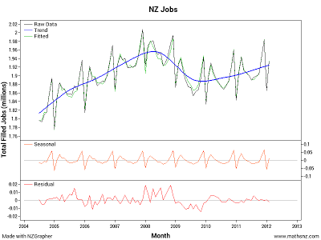

NZGrapher - OnlineNZGrapher is a free graphing tool that can run on any device, without an install. NZGrapher was developed to run on anything with a browser, computers, iPads, ChromeBooks, Microsoft Surface, Android, even iPhones.
You can access it at www.jake4maths.com/grapher
NZGrapher - At your school
Full details for getting NZGrapher running at your school are avaialbe here. NZGrapher has proved to be immensely popular, to the point that at times the server struggles with the load. If you would like to arrange to have NZGrapher hosted at your school (just for your own school's use, or shared with others if you want) this can normally be easily arranged, as most schools already have a server capable of running NZGrapher (you need a web server running PHP). If this is of interest to you please see full details here.
Note: If you cannot get NZGrapher hosted onsite because your server person doesn't want to set it up for you, or they say you don't have the correct equipment, but do want a dedicated access, ITed have offered to host it for you for $120 + GST per year, if you don't already have other services with them. You can contact them at: https://www.ited.co.nz/
NZGrapher for Windows
If the server load is getting you down, and you would like to run NZGrapher on your own machine, you can do that if you are running windows.
There are some known issues:
- You cannot right click to save images, you will need to use the snipping tool instead.
- When you try download the file it might say it hasn't been downloaded much so be careful... you'll need to press the small arrow (on chrome) to say 'keep' in order to save the file.
- When you try install the file it will pop-up with a message that this might not be safe... you'll have to press the 'More Info' and the 'Run Anyway' button (on Windows 8.1) or similar on other versions of Windows in order to continue.
Once installed it will notify you automatically of updates which you will be able to get with the press of a button, so you'll always have the most up to date version.
If you come across any issues with it please contact me.